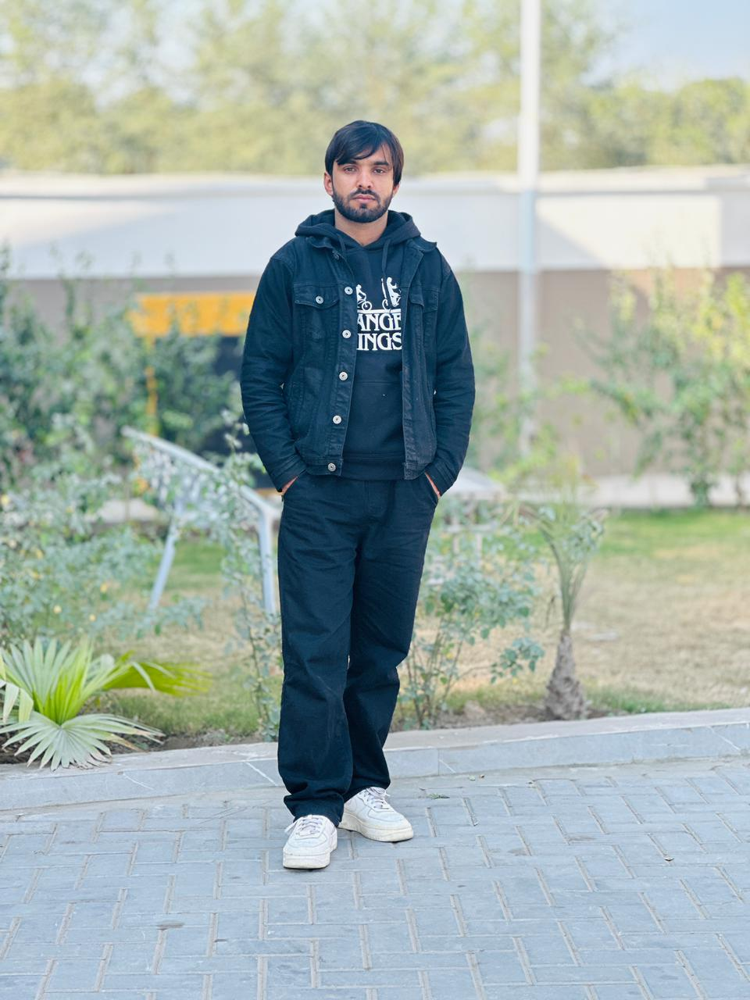

Cybersecurity Enthusiast from Pakistan specializing in Web Application Security, Ethical Hacking, and Red Team operations. Passionate about discovering vulnerabilities, learning modern attack techniques, and improving defensive security strategies.
I am Muhammad Zubair, a cybersecurity enthusiast focused on web application security and penetration testing. I actively practice through vulnerable labs and security training environments to sharpen my offensive security skills.